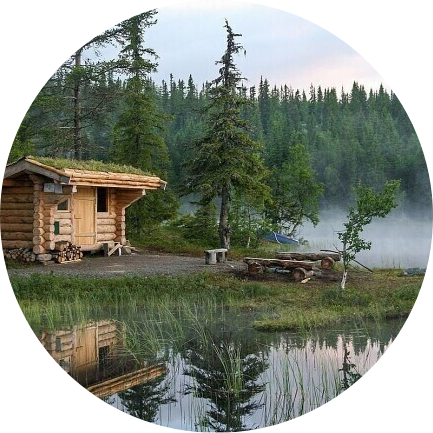

|  |
Karimova Arofatxon4 - kurs, G K va K talabasi Politexnika Instituti Qo'qon, O'zbekiston |
Men hozirda Farg'ona Politexnika Institutida 4-bosqichda o'qiyman. O'qishdan tashqari vaqtlarda ingliz tilini o'rganmoqdaman.
O'quv yillari |
O'qish nomi |
| 2014-2017 | Qo'qon neft va gaz sanoati KHK |
| 2019-2023 | Farg'ona Politexnika Instituti |
| O'zbek tili | ⭐️ ⭐️ ⭐️ ⭐️ ⭐️ |
| Rus tili | ⭐️ ⭐️ ⭐️ |
| Ingliz tili | ⭐️ ⭐️ |